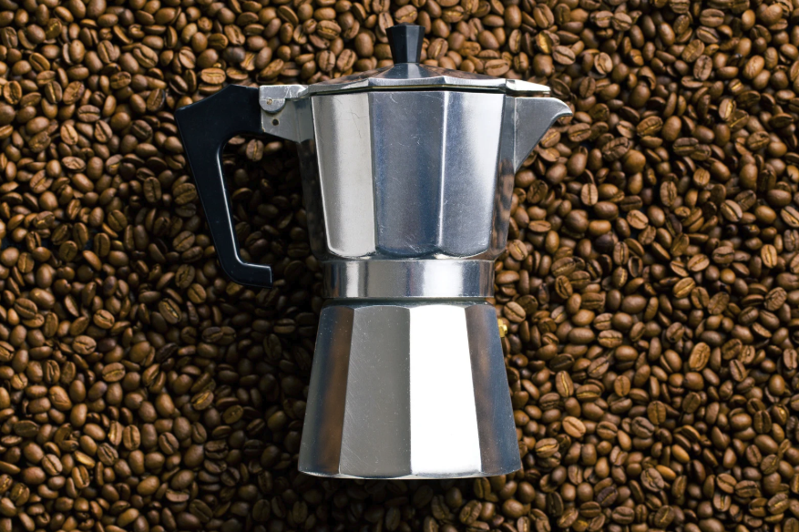

🤔
Hoe kies je de juiste percolator?
Van materiaal tot grootte, van budget tot kookplaat - alle factoren die je moet overwegen voor de perfecte keuze.
15 min lezen
Beginner vriendelijk
Lees gids →

🧽
Onderhoud en reiniging
Zo houd je je percolator jarenlang in topconditie en behoud je de beste koffiesmaak. Van dagelijkse reiniging tot ontkalken.
12 min lezen
Praktische tips
Lees gids →

⚖️
Percolator vs espressoapparaat
Wat zijn de verschillen en welke keuze past het beste bij jouw koffieritueel? Complete vergelijking met kostenanalyse.
18 min lezen
Vergelijking
Lees gids →